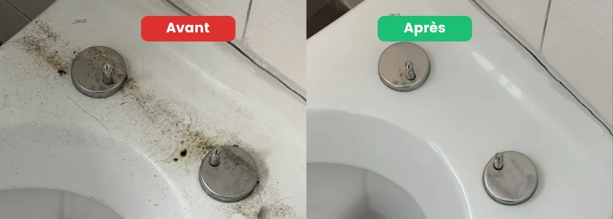

- La régie suit une checklist standardisée — pas d'improvisation, pas d'exception
- 3 zones = 80 % des retenues : hotte, joints/calcaire salle de bain, vitres
- Son outil principal : lumière rasante + toucher — elle révèle tout
- L'ordre compte : du haut vers le bas, pièce par pièce, tout est ouvert
- 64/64 états des lieux validés : notre méthode repose sur cette connaissance terrain
Comment fonctionne une inspection de régie
Un inspecteur de régie ne fait pas le tour au feeling. Il suit une procédure standardisée, pièce par pièce, avec trois outils que vous devez connaître.
La lumière rasante. L'inspecteur se place de côté par rapport à une surface et dirige sa lampe en rasant. Cette technique révèle instantanément les traces sur les vitres, les auréoles sur les sols, les résidus sur les plans de travail — tout ce qui est invisible en lumière frontale.
Le toucher. Un robinet « propre à l'œil » mais rugueux au toucher a encore du calcaire. Un plan de travail qui colle légèrement est considéré comme sale. Les surfaces sont touchées, pas seulement regardées.
L'ouverture systématique. La régie ouvre tout : placards, four, hotte, réfrigérateur, tiroirs. « Je n'ai pas nettoyé l'intérieur parce qu'il n'était pas très sale » n'est jamais une justification recevable.
Les 3 zones qui concentrent 80 % des retenues
Zone 1 — La hotte de cuisine. L'intérieur du caisson est ouvert systématiquement. Ce que la régie cherche : les parois intérieures (pas seulement les filtres) et les grilles d'aspiration. C'est la première cause de remarque dans nos 64 interventions.
Zone 2 — Joints et calcaire en salle de bain. Les joints noirs ou décollés déclenchent presque toujours une remarque. Le calcaire sous le robinet et le dessous du bec est détecté au toucher immédiatement.
Zone 3 — Les vitres. La régie se place de côté et rase le verre avec la lumière. Chaque trace devient visible. Un nettoyage au chiffon sans raclette laisse des auréoles — systématiquement détectées.
Ce que la régie vérifie — et ce qui est souvent raté
| Zone | Ce que la régie inspecte | Ce qui est souvent raté |
|---|---|---|
| Hotte | Intérieur caisson, filtres, parois | Parois intérieures du caisson |
| Four | Intérieur, grilles, vitre | Résidus sous les grilles |
| Réfrigérateur | Intérieur, joints, odeurs | Joints latéraux et bas |
| Joints SdB | Couleur, état, adhérence | Joints décollés aux angles |
| Robinetterie | Toucher (calcaire), visuel | Dessous du bec, brise-jet |
| Vitres | Lumière rasante, coins, rails | Angles supérieurs et rails |
| WC | Intérieur, extérieur, base | Base du WC côté mur |
| Interrupteurs | Traces de doigts | Pourtour de l'interrupteur |
| Placards | Intérieur, fond, coins | Fond des placards |
| Plinthes | Dessus et côtés | Coins et angles |

La checklist interactive
Utilisez cette checklist directement sur cette page pendant votre nettoyage — ou téléchargez-la en PDF pour l'imprimer. Cochez les points au fur et à mesure : la barre de progression se met à jour automatiquement.
Checklist état des lieux — Malo Nettoyage
Cochez les points au fur et à mesure de votre nettoyage
🔧 Méthode globale
🍳 Cuisine — zone la plus contrôlée
Hotte ⚠️ Point critique
Four ⚠️ Point critique
Électroménager
Meubles et surfaces
🚿 Salle de bain
Calcaire ⚠️ Point critique
Joints ⚠️ Point critique
WC
Finitions
🪟 Vitres — tolérance zéro
🛋️ Chambres et séjour
🔍 Zones souvent oubliées
✅ Contrôle final avant l'état des lieux
Ce que la garantie Malo Nettoyage vous apporte
Notre checklist ci-dessus reflète exactement ce que nos équipes vérifient avant de quitter votre logement. Si la régie signale un point lié à notre intervention — nous revenons gratuitement. C'est notre engagement écrit sur chaque fin de bail.
« Un immense merci ! J'ai été entièrement satisfaite par vos services de nettoyage de fin de bail : professionnalisme, efficacité, propreté et rapidité — et ce malgré la grande charge de travail. Vraiment au top ! Je recommande à 100 %. »
« Au top ! Mon appartement était dans un sale état, tout a bien pu être rattrapé. Merci infiniment, efficace et super sympathique. »
FAQ – État des lieux et checklist régie
La régie vérifie-t-elle vraiment tous ces points ?
Oui, systématiquement. Les inspecteurs de régie en Suisse romande suivent une procédure standardisée. Les points marqués ⚠️ dans notre checklist sont ceux qui reviennent le plus fréquemment dans les procès-verbaux de sortie que nous avons accompagnés.
Peut-on utiliser cette checklist pour un état des lieux d'entrée ?
Oui, avec des adaptations. À l'entrée, l'objectif est de documenter les défauts existants (pas de les corriger). Photographiez chaque point de la checklist à votre entrée — cela vous protège pour la sortie.
Si je rate un point, la régie peut-elle refuser l'état des lieux entier ?
Non. La régie note les points non conformes mais l'état des lieux se tient quand même. Vous avez généralement un délai pour corriger les points signalés, ou ceux-ci sont déduits de votre caution.
Combien de temps faut-il pour tout faire soi-même avec cette checklist ?
Pour un appartement de 3.5 pièces en bon état général, comptez 2 à 3 jours de travail en suivant l'ordre de la checklist. Les points critiques (hotte, joints, vitres) demandent à eux seuls 3 à 4 heures s'ils sont en mauvais état.
Malo Nettoyage peut-il intervenir si j'ai déjà commencé et que je bloque sur certains points ?
Oui. Nous pouvons intervenir sur des points précis — uniquement la hotte et les joints, par exemple — sans obligatoirement prendre tout le logement. Contactez-nous avec les photos des points problématiques.
En résumé
La régie suit une procédure précise : lumière rasante, toucher, ouverture systématique. Les trois zones critiques (hotte, joints/calcaire, vitres) concentrent la grande majorité des retenues sur caution. Cette checklist — construite sur l'expérience de 64 états des lieux validés dans la Broye — vous donne exactement les points à traiter, dans l'ordre où la régie les inspecte.
Vous préférez déléguer et avoir la garantie du résultat ? Demandez-nous un devis gratuit — réponse sous 24h, garantie retour écrite, 64/64 validés.